A few important aspects of the GradientPanelExt have been discussed in this section.
One of the most sophisticated features provided by the GradientPanelExt is its ability to include primitives in the borders.
The primitives that can be included in the GradientPanelExt are,
· Collapse Primitive - Facilitates expand and collapse option for the GradientPanelExt, with image provisions.
· Image Primitive - Images can be placed along any of the panel borders with gradient background.
· Text Primitive - Text can be included in the GradientPanelExt's borders.
· Host Primitive - Any Windows Forms or custom .NET Control can be placed along the panel borders.
The primitives for the GradientPanelExt can be included using the GradientPanelExt PrimitiveCollection Editor, which can be opened using the primitives property.
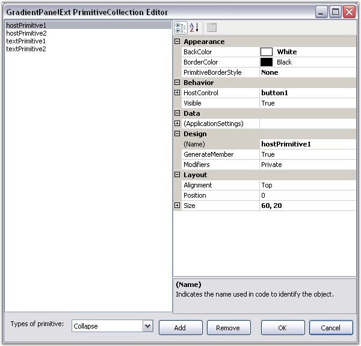
Figure 401: GradientPanelExt Primitive Collection Editor
The primitive type to be included should be chosen from the Types of Primitives available in the GradientPanelExt Collection Editor, and added to the control. The properties for the primitive can be set in the property grid available at the right side.
3.3.6.3.3.1.1 Expand and Collapse Options
Including the Collapse primitive, provides option to expand and collapse the GradientPanelExt. Performing the following steps will add the Collapse Primitive at design time.
1. Open the GradientPanelExt Collection Editor, and choose the Collapse primitive from the ComboBox available and add it.
2. Set the collapse and expand images in the CollapseImage and ExpandImage property respectively.
3. Specify the alignment and position of the primitive using its respective properties.
4. Close the GradientPanelExt Collection Editor. Build and run the application.
5. Now clicking on the Collapse primitive, collapses the control. The control collapses and expands on alternate clicks.
|
[C#]
Syncfusion.Windows.Forms.Tools.CollapsePrimitive collapsePrimitive1; gradientPanelExt1.Primitives.Add(collapsePrimitive1); collapsePrimitive1.Alignment = Syncfusion.Windows.Forms.Tools.Alignment.Bottom; collapsePrimitive1.BackColor = System.Drawing.Color.Transparent; collapsePrimitive1.CollapseImage = ((System.Drawing.Image)(resources.GetObject("collapsePrimitive1.CollapseImage"))); collapsePrimitive1.ExpandImage = ((System.Drawing.Image)(resources.GetObject("collapsePrimitive1.ExpandImage"))); collapsePrimitive1.Position = 130; collapsePrimitive1.Size = new System.Drawing.Size(40, 40); |
|
[VB.NET]
Private collapsePrimitive1 As Syncfusion.Windows.Forms.Tools.CollapsePrimitive gradientPanelExt1.Primitives.Add(collapsePrimitive1) Private collapsePrimitive1.Alignment = Syncfusion.Windows.Forms.Tools.Alignment.Bottom Private collapsePrimitive1.BackColor = System.Drawing.Color.Transparent Private collapsePrimitive1.CollapseImage = (CType(resources.GetObject("collapsePrimitive1.CollapseImage"), System.Drawing.Image)) Private collapsePrimitive1.ExpandImage = (CType(resources.GetObject("collapsePrimitive1.ExpandImage"), System.Drawing.Image)) Private collapsePrimitive1.Position = 130 Private collapsePrimitive1.Size = New System.Drawing.Size(40, 40) |
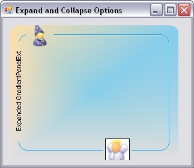
Figure 402: Expanded GradientPanelExt
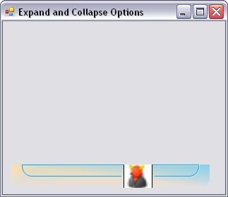
Figure 403: Collapsed GradientPanelExt
See Also
Image and Text Primitives, Host Primitives
3.3.6.3.3.1.2 Image and Text Primitives
Images and text can be included as individual primitives for the GradientPanelExt.
The image to be included, should be referenced in the Image property available for the primitive in the GradientPanelExt Collection Editor.
The text for text primitive, can be specified using the Text property available for the primitive in the GradientPanelExt Collection Editor. The text font and color can also be defined for the text primitive, using the TextFont and TextColor properties, respectively.
|
[C#]
// Defining Primitives and Adding them private Syncfusion.Windows.Forms.Tools.ImagePrimitive imagePrimitive1; private Syncfusion.Windows.Forms.Tools.ImagePrimitive imagePrimitive2; private Syncfusion.Windows.Forms.Tools.ImagePrimitive imagePrimitive3; private Syncfusion.Windows.Forms.Tools.ImagePrimitive imagePrimitive4; private Syncfusion.Windows.Forms.Tools.TextPrimitive textPrimitive1; private Syncfusion.Windows.Forms.Tools.TextPrimitive textPrimitive2; this.gradientPanelExt1.Primitives.AddRange(new Syncfusion.Windows.Forms.Tools.Primitive[] { this.imagePrimitive1, this.imagePrimitive2, this.textPrimitive1, this.textPrimitive2, this.imagePrimitive3, this.imagePrimitive4});
// imagePrimitive1 this.imagePrimitive1.Image = ((System.Drawing.Image)(resources.GetObject("imagePrimitive1.Image"))); this.imagePrimitive1.PrimitiveBorderStyle = Syncfusion.Windows.Forms.Tools.PrimitiveBorderStyle.None; this.imagePrimitive1.Size = new System.Drawing.Size(20, 20);
// imagePrimitive2 this.imagePrimitive2.Alignment = Syncfusion.Windows.Forms.Tools.Alignment.Bottom; this.imagePrimitive2.Image = ((System.Drawing.Image)(resources.GetObject("imagePrimitive2.Image"))); this.imagePrimitive2.Position = 2; this.imagePrimitive2.PrimitiveBorderStyle = Syncfusion.Windows.Forms.Tools.PrimitiveBorderStyle.None; this.imagePrimitive2.Size = new System.Drawing.Size(20, 20);
// textPrimitive1 this.textPrimitive1.Alignment = Syncfusion.Windows.Forms.Tools.Alignment.Left; this.textPrimitive1.Position = 21; this.textPrimitive1.Size = new System.Drawing.Size(150, 20); this.textPrimitive1.Text = "Text in Left Border"; this.textPrimitive1.TextColor = System.Drawing.Color.DarkOliveGreen; this.textPrimitive1.TextFont = new System.Drawing.Font("Arial", 9.75F, ((System.Drawing.FontStyle)((System.Drawing. FontStyle.Bold | System.Drawing.FontStyle.Italic))), System.Drawing.GraphicsUnit.Point, ((byte)(0)));
// textPrimitive2 this.textPrimitive2.Alignment = Syncfusion.Windows.Forms.Tools.Alignment.Right; this.textPrimitive2.Position = 24; this.textPrimitive2.Size = new System.Drawing.Size(150, 20); this.textPrimitive2.Text = "Text in Right Border"; this.textPrimitive2.TextColor = System.Drawing.Color.DarkGreen; this.textPrimitive2.TextFont = new System.Drawing.Font("Arial", 9.75F, ((System.Drawing.FontStyle)((System.Drawing. FontStyle.Bold | System.Drawing.FontStyle.Italic))), System.Drawing.GraphicsUnit.Point, ((byte)(0)));
// imagePrimitive3 this.imagePrimitive3.Image = ((System.Drawing.Image)(resources.GetObject("imagePrimitive3.Image"))); this.imagePrimitive3.Position = 256; this.imagePrimitive3.PrimitiveBorderStyle = Syncfusion.Windows.Forms.Tools.PrimitiveBorderStyle.None; this.imagePrimitive3.Size = new System.Drawing.Size(20, 20);
// imagePrimitive4 this.imagePrimitive4.Alignment = Syncfusion.Windows.Forms.Tools.Alignment.Bottom; this.imagePrimitive4.Image = ((System.Drawing.Image)(resources.GetObject("imagePrimitive4.Image"))); this.imagePrimitive4.Position = 256; this.imagePrimitive4.PrimitiveBorderStyle = Syncfusion.Windows.Forms.Tools.PrimitiveBorderStyle.None; this.imagePrimitive4.Size = new System.Drawing.Size(20, 20);
|
|
[VB.NET]
' Defining Primitives and Adding them Private imagePrimitive1 As Syncfusion.Windows.Forms.Tools.ImagePrimitive Private imagePrimitive2 As Syncfusion.Windows.Forms.Tools.ImagePrimitive Private imagePrimitive3 As Syncfusion.Windows.Forms.Tools.ImagePrimitive Private imagePrimitive4 As Syncfusion.Windows.Forms.Tools.ImagePrimitive Private textPrimitive1 As Syncfusion.Windows.Forms.Tools.TextPrimitive Private textPrimitive2 As Syncfusion.Windows.Forms.Tools.TextPrimitive Me.gradientPanelExt1.Primitives.AddRange(New Syncfusion.Windows.Forms.Tools.Primitive() {Me.imagePrimitive1, Me .imagePrimitive2, Me.textPrimitive1, Me.textPrimitive2, Me.imagePrimitive3, Me.imagePrimitive4})
' imagePrimitive1 Private Me.imagePrimitive1.Image = (CType(resources.GetObject("imagePrimitive1.Image"), System.Drawing.Image)) Private Me.imagePrimitive1.PrimitiveBorderStyle = Syncfusion.Windows.Forms.Tools.PrimitiveBorderStyle.None Private Me.imagePrimitive1.Size = New System.Drawing.Size(20, 20)
' imagePrimitive2 Private Me.imagePrimitive2.Alignment = Syncfusion.Windows.Forms.Tools.Alignment.Bottom Private Me.imagePrimitive2.Image = (CType(resources.GetObject("imagePrimitive2.Image"), System.Drawing.Image)) Private Me.imagePrimitive2.Position = 2 Private Me.imagePrimitive2.PrimitiveBorderStyle = Syncfusion.Windows.Forms.Tools.PrimitiveBorderStyle.None Private Me.imagePrimitive2.Size = New System.Drawing.Size(20, 20)
' textPrimitive1 Private Me.textPrimitive1.Alignment = Syncfusion.Windows.Forms.Tools.Alignment.Left Private Me.textPrimitive1.Position = 21 Private Me.textPrimitive1.Size = New System.Drawing.Size(150, 20) Private Me.textPrimitive1.Text = "Text in Left Border" Private Me.textPrimitive1.TextColor = System.Drawing.Color.DarkOliveGreen Private Me.textPrimitive1.TextFont = New System.Drawing.Font("Arial", 9.75F, (CType((System.Drawing. FontStyle.Bold Or System.Drawing.FontStyle.Italic), System.Drawing.FontStyle)), System.Drawing.GraphicsUnit.Point, (CByte(0)))
' textPrimitive2 Private Me.textPrimitive2.Alignment = Syncfusion.Windows.Forms.Tools.Alignment.Right Private Me.textPrimitive2.Position = 24 Private Me.textPrimitive2.Size = New System.Drawing.Size(150, 20) Private Me.textPrimitive2.Text = "Text in Right Border" Private Me.textPrimitive2.TextColor = System.Drawing.Color.DarkGreen Private Me.textPrimitive2.TextFont = New System.Drawing.Font("Arial", 9.75F, (CType((System.Drawing. FontStyle.Bold Or System.Drawing.FontStyle.Italic), System.Drawing.FontStyle)), System.Drawing.GraphicsUnit.Point, (CByte(0)))
' imagePrimitive3 Private Me.imagePrimitive3.Image = (CType(resources.GetObject("imagePrimitive3.Image"), System.Drawing.Image)) Private Me.imagePrimitive3.Position = 256 Private Me.imagePrimitive3.PrimitiveBorderStyle = Syncfusion.Windows.Forms.Tools.PrimitiveBorderStyle.None Private Me.imagePrimitive3.Size = New System.Drawing.Size(20, 20)
' imagePrimitive4 Private Me.imagePrimitive4.Alignment = Syncfusion.Windows.Forms.Tools.Alignment.Bottom Private Me.imagePrimitive4.Image = (CType(resources.GetObject("imagePrimitive4.Image"), System.Drawing.Image)) Private Me.imagePrimitive4.Position = 256 Private Me.imagePrimitive4.PrimitiveBorderStyle = Syncfusion.Windows.Forms.Tools.PrimitiveBorderStyle.None |
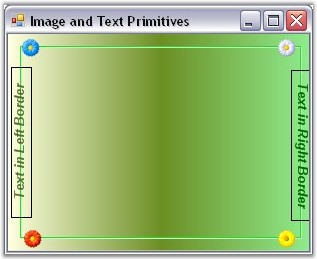
Figure 404: GradientPanelExt with Image and Text
See Also
Host Primitives, Expand and Collapse Options
Any .NET Windows Forms control or custom control can be included as a primitive in the GradientPanelExt. The host control should be referred in the HostControl property of the GradientPanelExt Collection Editor.
|
[C#]
//button1 Button button1 = new Button(); button1.FlatStyle = System.Windows.Forms.FlatStyle.Popup; button1.Text = "Button";
//hostPrimitive1 HostPrimitive hostPrimitive1 = new HostPrimitive(); hostPrimitive1.BackColor = System.Drawing.Color.Transparent; hostPrimitive1.HostControl = button1; hostPrimitive1.Size = new System.Drawing.Size(60, 20);
//progressBarAdv1 ProgressBarAdv progressBarAdv1= new ProgressBarAdv(); progressBarAdv1.BackColor = System.Drawing.Color.Transparent; progressBarAdv1.ProgressStyle = Syncfusion.Windows.Forms.Tools.ProgressBarStyles.Tube; progressBarAdv1.TubeStartColor = System.Drawing.Color.FromArgb(((int)(((byte)(255)))), ((int)(((byte)(192)))), ((int) (((byte )(192)))));
//hostPrimitive2 HostPrimitive hostPrimitive2 = new HostPrimitive(); hostPrimitive2.Alignment = Syncfusion.Windows.Forms.Tools.Alignment.Bottom; hostPrimitive2.BackColor = System.Drawing.Color.Transparent; hostPrimitive2.HostControl = progressBarAdv1; hostPrimitive2.Position = 200; hostPrimitive2.Size = new System.Drawing.Size(100, 20);
//Adding Primitives gpe.Primitives.AddRange(new Syncfusion.Windows.Forms.Tools.Primitive[] { hostPrimitive1, hostPrimitive2}); |
|
[VB.NET]
'button1 Private button1 As Button = New Button() Private button1.FlatStyle = System.Windows.Forms.FlatStyle.Popup Private button1.Text = "Button"
'hostPrimitive1 Private hostPrimitive1 As HostPrimitive = New HostPrimitive() Private hostPrimitive1.BackColor = System.Drawing.Color.Transparent Private hostPrimitive1.HostControl = button1 Private hostPrimitive1.Size = New System.Drawing.Size(60, 20)
'progressBarAdv1 Private progressBarAdv1 As ProgressBarAdv = New ProgressBarAdv() Private progressBarAdv1.BackColor = System.Drawing.Color.Transparent Private progressBarAdv1.ProgressStyle = Syncfusion.Windows.Forms.Tools.ProgressBarStyles.Tube Private progressBarAdv1.TubeStartColor = System.Drawing.Color.FromArgb((CInt((CByte(255)))), (CInt((CByte(192)))), ( CInt((CByte (192)))))
'hostPrimitive2 Private hostPrimitive2 As HostPrimitive = New HostPrimitive() Private hostPrimitive2.Alignment = Syncfusion.Windows.Forms.Tools.Alignment.Bottom Private hostPrimitive2.BackColor = System.Drawing.Color.Transparent Private hostPrimitive2.HostControl = progressBarAdv1 Private hostPrimitive2.Position = 200 Private hostPrimitive2.Size = New System.Drawing.Size(100, 20)
'Adding Primitives gpe.Primitives.AddRange(New Syncfusion.Windows.Forms.Tools.Primitive() {hostPrimitive1, hostPrimitive2}) |
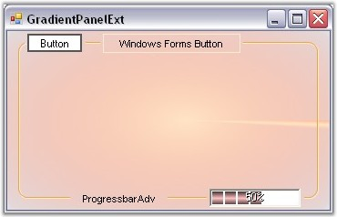
Figure 405: GradientPanelExt with Host Controls
See Also
Expand and Collapse Options, Image and Text Primitives
The collapse and expand operation in a GradientPanelExt control can be animated by setting Animated property to true. Delay in animation and the speed of animation is specified in AnimationDelay and AnimationSpeed properties.
|
[C#]
this.gradientPanelExt1.Animated = true; this.gradientPanelExt1.AnimationDelay = 11; this.gradientPanelExt1.AnimationSpeed = 2; |
|
[VB.NET]
this.gradientPanelExt1.Animated = True this.gradientPanelExt1.AnimationDelay = 11 this.gradientPanelExt1.AnimationSpeed = 2 |
By setting the background properties, the user can create a GradientPanelExt according to his requirements. The properties and styles for the GradientPanelExt have been listed and discussed below.
Background Properties
BackColor represents the background color used to display the text or the graphics in the control.
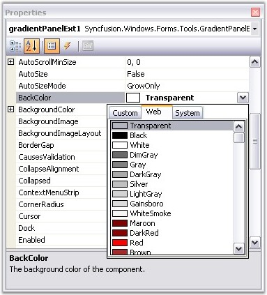
Figure 406: Setting the BackColor for the GradientPanelExt
|
[C#]
gradientPanelExt1.BackColor = System.Drawing.Color.Transparent; |
|
[VB.NET]
Private gradientPanelExt1.BackColor = System.Drawing.Color.Transparent |
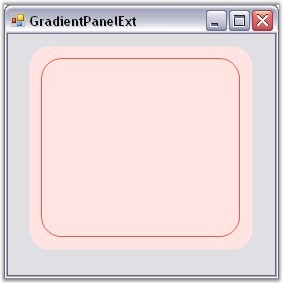
Figure 407: GradientPanelExt with BackColor Set
The colors and styles of the GradientPanelExt control can be set using the BackgroundColor properties, which have been explained below:
· Style - The styles available are solid, pattern and gradient.
· BackColor - User can select the required colors for the background using Backcolor property.
· ForeColor - Foreground color, for text or graphics can be set using ForeColor property.
· PatternStyle - Provides the pattern styles available for the style selected.
· GradientColors - This pops up the Color Collection Editor, which allows the user to add colors and get a combination of colors to display in the gradient panel with the specified style.
|
GradientPanelExt Properties |
Description |
|
Style |
Specifies the brush style (Solid, Pattern, Gradient). |
|
BackColor |
Gets or sets the back color. |
|
ForeColor |
Gets or sets the fore color. |
|
PatternStyle |
Gets or sets specifies the pattern style. |
|
GradientColor |
Specifies the gradient colors, with the first color same as BackColor and last color same as ForeColor. |
|
BackgroundImage |
Specifies the background image for the control. |
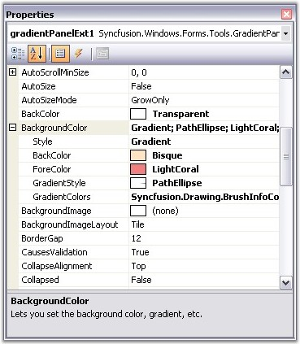
Figure 408: Setting the BackgroundColor properties for the GradientPanelExt
Alternatively, the BackgroundColor for the control can also be set using the following code snippet.
|
[C#]
gradientPanelExt1.BackgroundColor = new Syncfusion.Drawing.BrushInfo(Syncfusion.Drawing.GradientStyle.PathEllipse, new System.Drawing.Color[] { System.Drawing.Color.Bisque, System.Drawing.Color.LightSalmon, System.Drawing.Color.LightCoral}); |
|
[VB.NET]
Private gradientPanelExt1.BackgroundColor = New Syncfusion.Drawing.BrushInfo(Syncfusion.Drawing.GradientStyle.PathEllipse, New System.Drawing.Color() { System.Drawing.Color.Bisque, System.Drawing.Color.LightSalmon, System.Drawing.Color.LightCoral}) |
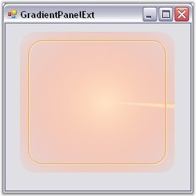
Figure 409: GradientPanelExt with BackgroundColor Set
Image Settings
A background image can be set for the gradient panel using the BackgroundImage property. User can set the layout for the background image using the BackgroundImageLayout property. These properties can be set programmatically using the below code snippets.
|
[C#]
gradientPanelExt1.BackgroundImage = ((System.Drawing.Image)(resources.GetObject("gradientPanelExt1.BackgroundImage"))); gradientPanelExt1.BackgroundImageLayout = System.Windows.Forms.ImageLayout.Stretch; |
|
[VB.NET]
Private Me.gradientPanelExt1.BackgroundImage = (CType(resources.GetObject("gradientPanelExt1.BackgroundImage"),System.Drawing.Image)) Private Me.gradientPanelExt1.BackgroundImageLayout = System.Windows.Forms.ImageLayout.Stretch |
Figure 410: GradientPanelExt with a Background Image
Foreground
The control's text can be customized by altering its Font properties. The ForeColor property represents the GradientPanelExt's text color. Using the following code snippet customizes the foreground of the GradientPanelExt.
|
[C#]
this.gradientPanelExt1.Font = new System.Drawing.Font("Comic Sans MS", 9.75F, ((System.Drawing.FontStyle) (((System.Drawing.FontStyle.Bold | System.Drawing.FontStyle.Italic) | System.Drawing.FontStyle.Underline))), System.Drawing.GraphicsUnit.Point, ((byte)(0))); this.gradientPanelExt1.ForeColor = System.Drawing.Color.DarkGreen; |
|
[VB.NET]
Private Me.gradientPanelExt1.Font = New System.Drawing.Font("Comic Sans MS", 9.75F, (CType (((System.Drawing.FontStyle.Bold Or System.Drawing.FontStyle.Italic) Or System.Drawing.FontStyle.Underline), System.Drawing.FontStyle)), System.Drawing.GraphicsUnit.Point, (CByte(0))) Private Me.gradientPanelExt1.ForeColor = System.Drawing.Color.DarkGreen |
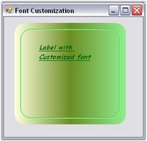
Figure 411: GradientPanelExt with Customized Foreground
Corner Radius
The GradientPanelExt comes as a rounded rectangle by default. The rounded corners can be removed or their radius can be modified using the CornerRadius property.
|
GradientPanelExt Property |
Description |
|
CornerRadius |
Used to set or get the radius truncation for the control's corners. |
|
[C#]
gradientPanelExt1.CornerRadius = 14; |
|
[VB.NET]
Private gradientPanelExt1.CornerRadius = 14 |
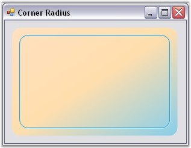
Figure 412: GradientPanelExt with CornerRadius
The CornerRadius can be turned off by giving a value of zero for it.
|
[C#]
gradientPanelExt1.CornerRadius = 0; |
|
[VB.NET]
Private gradientPanelExt1.CornerRadius = 0 |
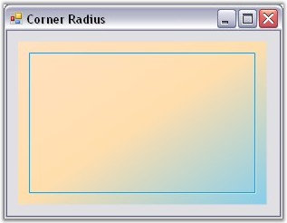
Figure 413: GradientPanelExt without Rounded Corners
Border Gap
The GradientPanelExt comes with a margin for all the four sides. The spacing between the margin and the control's border can be set using the BorderGap property.
|
GradientPanelExt Property |
Description |
|
BorderGap |
Used to get or set the gap between the border and the margins. |
The border gap for the GradientPanelExt can be set programmatically as given below.
|
[C#]
gradientPanelExt1.BorderGap = 40; |
|
[VB.NET]
Private gradientPanelExt1.BorderGap = 40 |
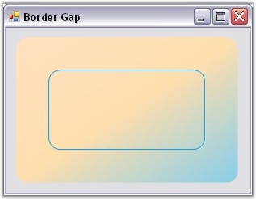
Figure 414: GradientPanelExt with increased Border Gap
The scroll settings that apply for the GradientPanel also applies for GradientPanelExt control.
See Also